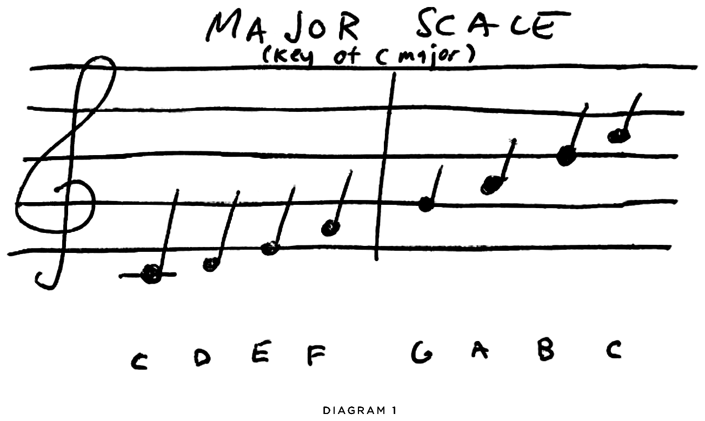
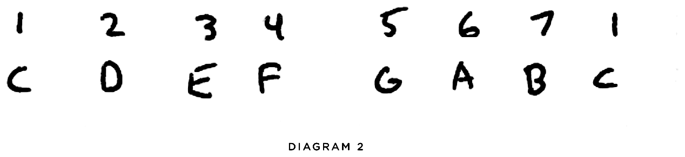
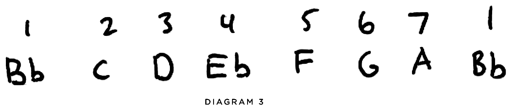
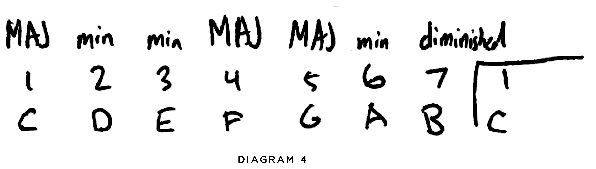

Intro
Hi! I'm Jesse and I play bass for my day job. One reason I wanted to put this resource out there is because I feel like bass players don't get a whole lot of resources made just for them. I had to learn a lot of these things on my own and I wanted to create something that I wish I had a few years ago. In my time playing worship bass I've come across a lot of people who have the opinion that worship music is boring musically and that it is not difficult to play. Bass players seem to deal with this a good bit because of the genre's simple chord structure and rhythmic patterns. While it may not be "difficult" in the way that playing Victor Wooten licks can be physically challenging, there are several areas in which I find that worship bass playing is just as challenging.
Take these 3 sentences for example:
- I like to watch movies.
- I get a kick out of going to movie theaters and watching action movies on giant screens.
- It's thrilling to partake in cinematic experiences.
Some of these sentences contain more information than the others. Some might include bigger vocabulary. Some might just get the bare minimum to communicate a feeling. If you're going around a group and talking about one thing you enjoy, "I like to watch movies" might be more appropriate than "It's thrilling to partake in cinematic experiences" — but at the same time if you're on a first date and you're going back and forth about yourselves and you say that you "get a kick out of going to movie theaters and watching action movies on giant screens", that might be more personable than just "I like to watch movies".
As a bass player, you're a part of the musical conversation that's happening. Sometimes it's appropriate to throw in some of those fancy licks (just like fancy verbage in conversation), but sometimes it can seem really disingenuous and ruin the moment. I hope this resource will help enable you to be more intentional with your note choices and play more confidently as you hone your craft!
Practical Tips
Mindset
Mindset is one of the most crucial parts of being a musician. What notes are you choosing to play? How are you choosing to serve the song? Here are some things to think about when approaching worship bass playing:
- You and the drummer are the backbone of what goes on.
- The notes you play provide the foundation of the chord.
- Start to think like a producer:
- If each song is a pie, each musician and singer has a slice of it. What's your slice?
- If everyone is doing fancy licks at every turn, no one is going to be heard. Give each other room to do cool things.
- What pockets are there for me to add something extra in a song?
- How would you play differently with only one electric guitar vs two? What about with a piano player vs. keys player?
- What kind of room are you playing in?
- When we're practicing in our room, we're able to hear the dynamics of our instrument very well. When we barely tap the strings we can hear it. But in a group setting it's hard to pick out the dynamics when everyone is playing. Recalibrate your playing so that your range goes from like 70%–100%.
Goals in Worship Bass
It's important to define your goal in playing bass as a part of the worship team. I'm not necessarily talking about a 5 year plan type of goal, but more about defining the "why" behind what you're doing. What is it for? In rock music, it's to gain followers, gain attention, gain CD sales, entertain the audience… which is totally fine! Those things aren't bad. But knowing your goals informs your playing. So are you playing on a Sunday morning to gain those things? I'd argue that Sunday mornings and anytime you lead people in worship, it's about bringing people into the presence of the Lord as you worship the Lord as well. Let that inform your note choices and stage presence.
Serving the Song
You might know some really sweet licks, have some gnarly tone, or even have some ideas of passing chords that would be musically pleasing. While these things are great and can be worked out in practice, just think of your playing as a way to serve the song. What does it need? Let your licks be like Batman. Maybe your licks are the notes the audience deserves, but not the ones it needs right now.
Playing & Technique
Note Choices
One thing I've seen a lot of bass players get hung up on is choosing the right notes to play. The answer to this is actually incredibly simple: just play the chords. Since you're part of the backbone of the group, start out with the foundation of just playing what chords are happening. Don't get too caught up in the weeds of each song trying to find perfect note choices.
Syncing Up With Drums
I've been given some pretty bad advice from other people about how to play rhythmically. The kick drum is NOT your only source of rhythmic guidance. If you are only listening to kick patterns you will miss a lot of rich stuff that the other parts of a kit can show you. So I want to set the record straight with you guys here. A good place to start knowing how to play rhythmically is by listening to the kick, snare, and hi-hat from your drummer. The kick pattern is definitely important to follow, but if you're not listening to the snare and hi-hat you might miss the context of the patterns that are being played and lose out on the rhythm of your playing. Use the kick as your base line (no pun intended) and then listen to snare and hi-hat for some extra ideas. I like to play octaves of the chord I'm playing during snare hits in choruses and bridges of songs to give the song an extra lift. It's subtle, doesn't change the root that people are hearing, so it's a great way to add without overpowering. If you play with a drummer often, you might start learning their tom fills too and can fill in some fancy licks in time with their fills.
Voicing Notes, Feeling and Phrasing
The part of the neck you play on and the string you choose matters. Sure, you can play an "A" note on the 5th fret of the low E string and also as an open A, but the difference in tone is noticeable because the string you play the note on has a different thickness and tension to it. Be intentional to choose notes based on how they sound more than just the knowledge that it's the same note.
When it comes to the feel of playing bass, I've heard a lot of people in the worship world talk about "laying back." If you play with a metronome it's basically just laying on the backside of the click rather than rushing on the front side (does this sound like football to anyone else?) BUT, I will make the argument that laying back isn't always what feels best. Each song breathes differently and feels different. Sometimes you can build anticipation in the bridge of a song by slightly rushing the last measure of a bridge build and then laying back and using more sustained notes in the following chorus. (A good example of this is is in Great Are You Lord. Build the last bridge and then drop to a low sustained note going into the next chorus.) It's all about what actually feels better, not what others think or what have heard you should do to make it sound better.
"Phrasing" is a huge part of feel. Phrasing includes where you play your notes, how you play your notes (with hammer ons, pull offs, etc), and which notes you play in order. I view bass like I would singing phrases. Vocalists have to slide into certain notes, take breaths, choose whether to sing in chest voice or float notes in order to hit them. In the same way, make your bass sing each note and phrase. You're not just a rhythmic element in music, so choose your licks intentionally.
Another part of phrasing is choosing how long notes sustain out. A mistake I often see in bass players starting out is they like to make their notes short and try to "groove" too much with the song. Long sustained notes are really pleasing to hear underneath the color that all of the other instruments are providing. Don't be afraid to hold a note out until the next note is supposed to be played. This includes the end of phrases where the band is about to drop out. Make sure you play through the end of the phrase instead of awkwardly dying out and looking like a fool with your pants on the ground.
One of the last points I'll make in this section is about dynamics. Dynamics are more than just playing louder and softer. Getting "bigger" in a moment can mean just choosing a lower note to round out the sound more or changing the last measure of a build into 16th notes instead of 8th notes. Get creative with how to change the dynamic of a song without just using volume as your only tool.
Tone
Tone is an area that can be discussed for a long time. People will fight you to the death (especially on the Facebook group Gear Talk: Praise & Worship) about what tone is "right" for bass and guitar.
I'll talk a bit about tone in this section, but also know that things are subjective. You might like something that someone else doesn't like as far as your tone goes. All that matters is that you use your tone to take them to the Throne. (I'm so sorry. I had to throw in something like that.)
Everything affects your tone! Cables, basses, parts of the string you strike, pick ups, wood in your bass, etc. Here are just some things to think about when it comes to tone:
Fingernails vs. Flesh
- This might seem like a really small thing, but fingernails can make your notes sound inconsistent when you pluck a string. If you want the attack of a nail, make sure you use it intentionally, otherwise it'll seem like you're not paying attention when your smooth sound is interrupted by sharp attack every other note.
- Using the flesh on each of your fingers is smoother, nails bring more attack, and using your palm to mute while using your thumb can be a very round tone.
- Where are you plucking the note with your right hand? If you do it over the pickups it'll sound different than up on the neck.
Picks
Picks have different tones. Thicker picks get a lot fuller of a tone while thinner picks give a lot of brightness in the attack. Even where you strike the string with your pick makes a difference. The edges feel rounder in tone than just the pointed bottom.
Basses
Your bass is probably one of the most obvious places that tone will come from. There are several factors within a bass that make up it's voice.
- Active vs. Passive: Active basses have a battery that is powering up your preamp/pickups so the tone is a lot more aggressive. Passive basses don't have that same punch, but sound warm and round.
- Single Coil vs Humbucker: The difference between single coils and pick ups is pretty noticeable when you've got them side by side. A humbucker is basically two single coils that are wired out of phase with each other (to buck the hum). Single coils are typically a little brighter while humbuckers are typically louder and darker.
Pedals
I'm not sure why pedals are such a hot topic when it comes to bass guitar, but say that adding pedals to your signal chain is a sin. I don't see that anywhere in the Bible so here are some things to look at with bass pedals.
Basics
- There aren't any "essential" pedals for bass. You can plug directly into the sound board (usually through some sort of DI box) and it sounds good already. But there are some pedals that can be used as tools to sculpt your sound.
- Tuner: ALWAYS BE IN TUNE. You don't need a pedal, but you can by a clip on tuner for less than $20. Your tone is important, but nothing can ruin great tone faster than bad tuning.
- Compression: I use compression to smooth out my dynamics a little bit. It evens it out so your tone is nice and buttery.
- Amp/Cab Simulation: If you're not running into a real amp, these can be helpful to give a little bit of character to your notes. When you dig in the settings can get a little dirty just like a real amp would.
Some Advanced Options:
- When you're looking to sculpt your tone even further, here are some categories of different pedals that would be interesting:
- Drives (fuzz, overdrive, distortion) to give your tone a little aggression and stick out in the mix better, Mods (Reverbs, Delays, Chorus) to provide specific effects, and Octavers, so you're sending more information to cover the sonic range in a mix.
Amps
Amps aren't as essential for bass as they can be for electric guitar so I'm not going to spend a ton of time on them. The warmth of a real amp is hard to beat. They give you drive when you really dig in, they feel good when they're turned up and you feel it in your chest, and they can be great for adding low end into a room where the PA doesn't have much low end. Most situations however will probably not allow for a live amp, so a great option is getting something like a SansAmp to give you the drive and dynamic of a real amp.
Theory
Scale Theory
Scales can be daunting because there are so many different ones to learn. Once you learn the major and minor scales you begin to notice other things like major pentatnoic and minor pentatonic scales. Then harmonic and melodic minor. Then modes that are built off of each scale degree. Then variations of those modes that if properly written out look like plans to build the death star. It's overwhelming and that's why a lot of people don't dive into scale theory. BUT I'M GOING TO MAKE THIS SO SIMPLE FOR YOU THAT YOU MIGHT BE ABLE TO SELL THIS ON AN INFOMERCIAL AFTERWARDS. Just master the Major scale and forget the other ones. In worship music, 90% of the songs will be based on the major scale. So here's some stuff about the Major scale:

Ain't nobody got time for reading music right now, but I'm going to base everything off of the C major scale in this example. You build a major scale based on steps. If you're playing a C and you go up a whole step (2 frets) that note is a D. From D if you go up a whole step, it's an E. Then a half step (1 fret) brings you to F. Then a whole step from F is G. A whole step from G is A. A whole step from A is B. Then a half step from B leads you back to your "tonic" or your "root" note C. So if you're ever trying to build a scale here is what to think of (W = Whole Step and H = Half Step):
Chord Theory
"Why does chord theory matter for a bass player? Don't I just play one note?" Chord theory can change everything about how you approach bass. When you're thinking in chords and not just notes it can help you decide which notes sound better to use on fills and which notes can be used in passing. It can also help with things like the Nashville Number System. And the Nashville Number System can help in memorizing music really quickly. So with that in mind, here's a little bit on chord theory:
Each note in your scale is called a "scale degree." So let's take the Major scale again and give each of the notes a number:

Each of these numbers is important because they take the note and make it something that is transposable. If you build a major scale in the key of Bb, the numbers are still the same. So let's build Bb off of our "patented" WWHWWWH scale:

The Bb major scale is just showing us what notes the WWHWWWH is leading us to in that key. You can do this with any key and the numbers remain the same.
Going back to the C major scale, chords are built on thirds. What that means is that when you play a note to begin a chord in that scale, skip a note and that builds the next part of the chord. So from C (1) skip D (2) and then E (3) is your next note in the chord. Then from E skip F (4) and then G (5) is the next part of the chord. These 3 notes comprise the basic major and minor chords in a key. We won't get into extensions like minor 7ths and 9ths and stuff, but this is the basic way things are constructed.
You don't have to fully grasp that stuff to be honest. Here's a shortcut to know which things are major and minor:

So if you're in the key of C and you're playing a G chord, you can know that G is a 5 and that 5's are always major in the key. (There are exceptions which can cause debate for years. Ex. Revelation Song. The "5" is minor because it's written in a mode of the major scale based off of the 5 called Mixolydian. It's confusing because it throws a wrench into the 5 is always major thing, but ignore this anomoly and we'll get back to the regularly scheduled programming here.)
Inversions can be really cool for bass players because it shifts the dynamic of a chord into a completely different space. So they should be used with caution if the actual chord in the song doesn't have the inversion written in. But here's how inversions work. You have your chord built on 3rds (1, 3, 5 or C, E, G). A first inversion would mean that the "root" note shifts to the second note in the chord (or the 3). So in the key of C, your first inversion for the chord C is an E. The second inversion is a G because that is the next note it's built on. An F chord in the key of C is major, so you build it F, A, C or 4, 6, 1. The first inversion would be an A and the second inversion would be a 1.
"QUESTION! So what if a song starts off on a minor chord? Doesn't all of this get thrown away?" Songs that start on a minor usually start on the 6 of a major scale (which is a minor chord). So you can still use major scale theory, just know that your first chord is not a "1". Lots of worship songs start off on chords that aren't the root of the scale, but the root note of the key is usually what centers the whole song back to feeling rest (if it ever really does rest.)
Nashville Numbers
Now that you've seen a little bit about how chords correlate with numbers in a scale degree, you've basically learned the Nashville Number System. There are some little nuances of understanding how charts are written in numbers, but if you wanted to communicate you could say that a progression in the key of C is a "six four one five" and know that 6 chords are minor and 4, 1, and 5 chords are major.